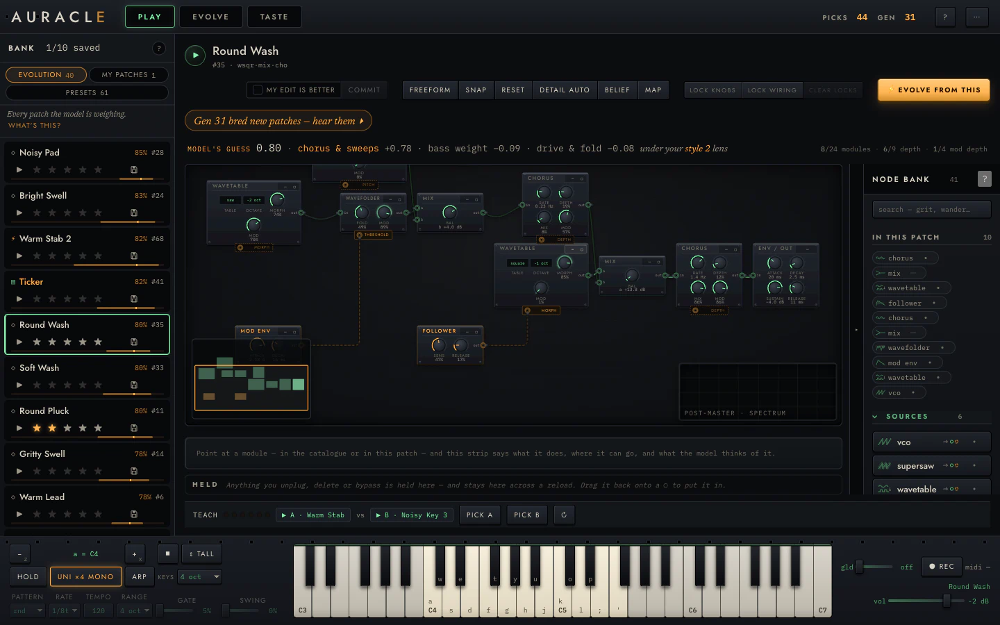
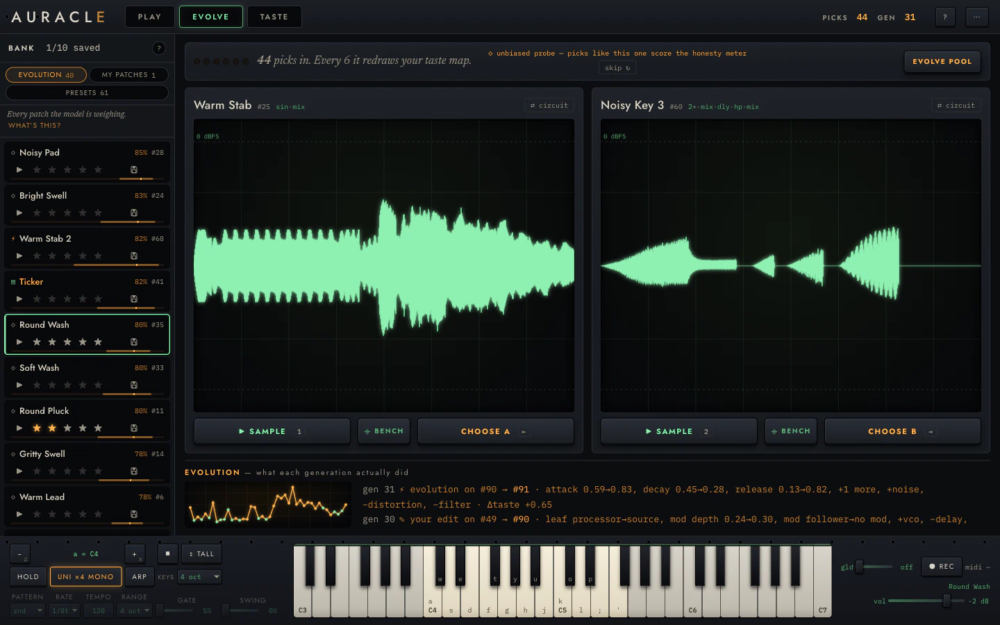
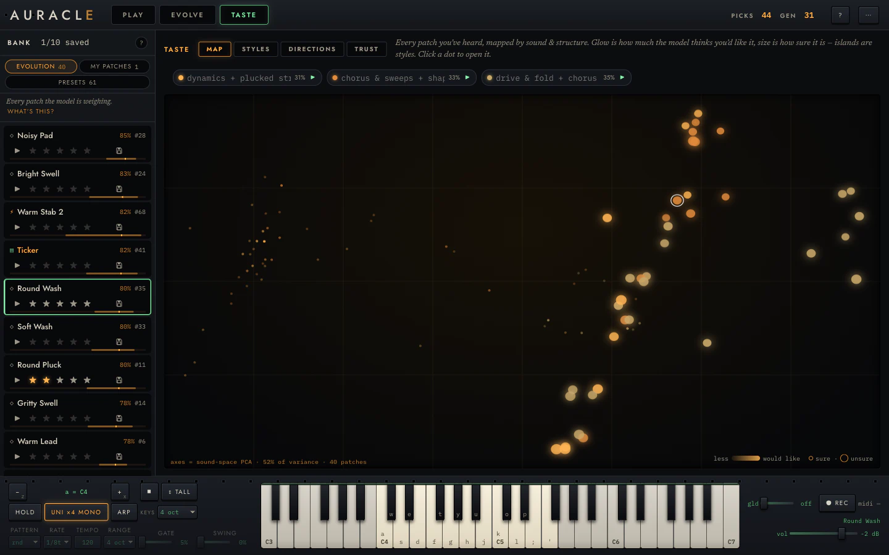
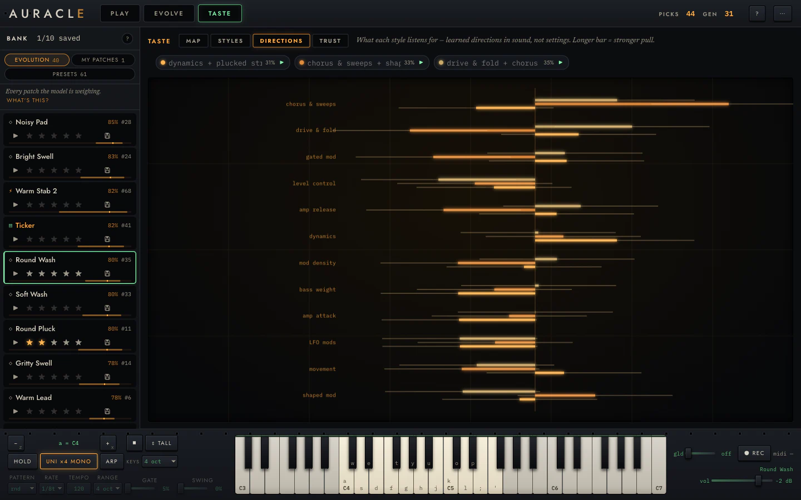

Modular synthesizer · Evolutionary search · Runs in your browser
Pick the sound
you like better.
Auracle plays you two patches, learns which one you preferred, and starts making more of it. The panel here is real — press play and choose.
Free, no account, nothing to install. Your patches and your taste model stay in your browser.
What it thinks you like
Press 1 and 2, then pick the one you prefer.
A four-knob miniature. The real instrument measures forty coordinates and fits a posterior over up to five taste lenses — but the update running here is the same Bradley–Terry likelihood.
The problem
Sound design makes you choose between fast and deep.
Explore
Presets and randomizers. Fast, and shallow — you audition until something works, and nothing accumulates. Tomorrow you start over.
Construct
Patch from scratch. Deep, and slow. You get exactly what you can already imagine, at the speed you can build it.
Infer
Auracle treats it as inference. It generates, you judge, it fits a model of your taste and searches with it. The work you put in on Tuesday is still there on Friday.
The instrument
Three views, one loop.

PLAY. The patch is the subject: its whole rack, knobs at true positions in musical units, editable and lockable while it runs live under your hands.

EVOLVE. Duels under a meter that counts down to the next refit, and a lineage log that says what each generation actually changed — attack 0.59→0.83, +noise, −distortion.

TASTE. Every patch you have heard, placed by sound and structure. Glow is how much it thinks you would like it; size is how sure it is.
What it actually does
A model that can be wrong in public.
Your picks condition one latent quantity: how much you would like a patch. Taste is a maximum over lenses rather than a single direction, so you are allowed to love dark drones and bright plucks without the model averaging them into a preference for neither.
u(x) = maxk θk · φ(x)
Search then proposes toward you: the fitted taste reshapes the grammar's own proposal weights, not just the score.
πβ(x) ∝ pgrammar(x) · eβu(x)
And every duel is forecast before you answer it, then scored against a proper scoring rule. Which means the instrument can tell you when it does not know yet — and early on, it does.
Read how it works ▸
How it fits together
Two loops, running at different speeds.
The machine evaluates thousands of candidates against what it has learned about you, silently, and surfaces a curated few. That asymmetry is the answer to the thing that kills every other interactive-evolution tool: being asked to rate a whole population, every generation, until you quit.
Forty-one modules
Catalogued in signal-flow order, not alphabetically.
- sourcesA wavetable, a physically-modelled pluck, a formant oscillator that speaks vowels, supersaw, VCO, noise
- shapeWavefolder, distortion in three drive modes, bitcrush
- filterSVF, diode ladder, parametric EQ, vocoder
- spaceDelay, reverb, granular, pitch shift
- motionChorus, phaser, flanger, tremolo, vibrato
- dynamicsCompressor, ducker, noise gate — each with a control input, so sidechaining is a typed connection rather than a convention
- combineCrossfade and ring modulation, merging two chains into one
- modulationLFO, envelope, sample-and-hold, slew, follower, Euclidean — and these chain: s&h rand → quantize → slew before it ever reaches a cutoff
Every knob is an address in the genome, so turning one edits the patch the search is working on — and locking one means refinement provably leaves it alone.
Start
Nothing to install.
Play it now
The live build, tracking the tip of the repo. Pick three presets when it asks, then answer duels.
Open the instrument ▸Run it offline
Every release attaches a prebuilt bundle. Unzip, serve the folder, open the URL. No toolchain.
Releases ▸Build it
Rust workspace, five crates, one clone — the foundations come from crates.io.
Source ▸